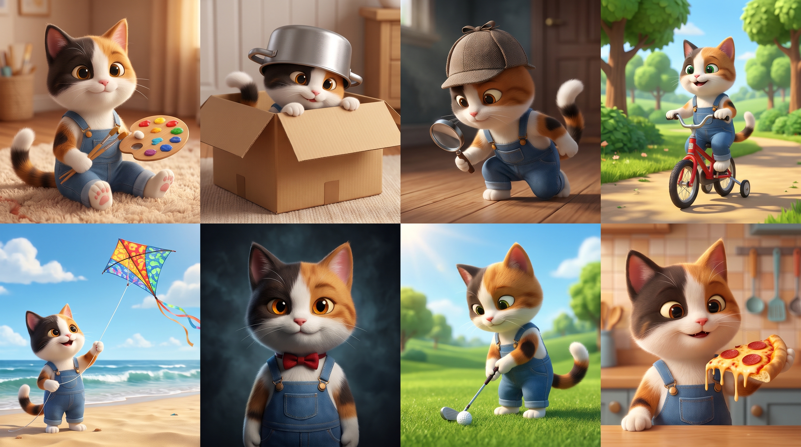

Sunt Ionuț.
Mimi m-a făcut să creez.
Despre începuturi grele, idei care au prins viață și drumul pe care îl construiesc pas cu pas.

Un personaj.
O lume întreagă.
Mimi a fost începutul. M-a făcut să creez și să-mi imaginez mult mai mult decât animații. De la ea au crescut idei de aplicații și jocuri, iar dorința de a le construi a devenit parte din drumul meu.
ICH vine de la numele meu: I de la Ionuț și CH de la Chetreanu. ICH Studio este locul meu pentru proiecte — ca să arăt ce am făcut, la ce lucrez și ce vreau să creez mai departe.
Am trecut printr-o perioadă grea și am făcut greșeli. Nu vreau să las acele momente să mă definească. Încerc să-mi asum ce s-a întâmplat și să mă reconstruiesc pas cu pas.
În perioada aceea, am început să vorbesc despre animații și pasiunile mele cu Gemini și ChatGPT. Aceste două instrumente m-au ajutat să-mi pun ideile în ordine și să le dau formă. Ideile și proiectele pe care le construiesc sunt ale mele, iar conversațiile m-au ajutat să continui.
FlowAlarm a pornit dintr-o problemă personală: să-mi organizez mai ușor alarmele când lucrez în trei schimburi. Mi-am dorit o soluție mai simplă și pentru alți oameni cu programe asemănătoare. Mai am și ideea unui joc puzzle cu suspans, inspirat de jocul Go — deocamdată, este la început.
Greșelile nu sunt
ultimul capitol.